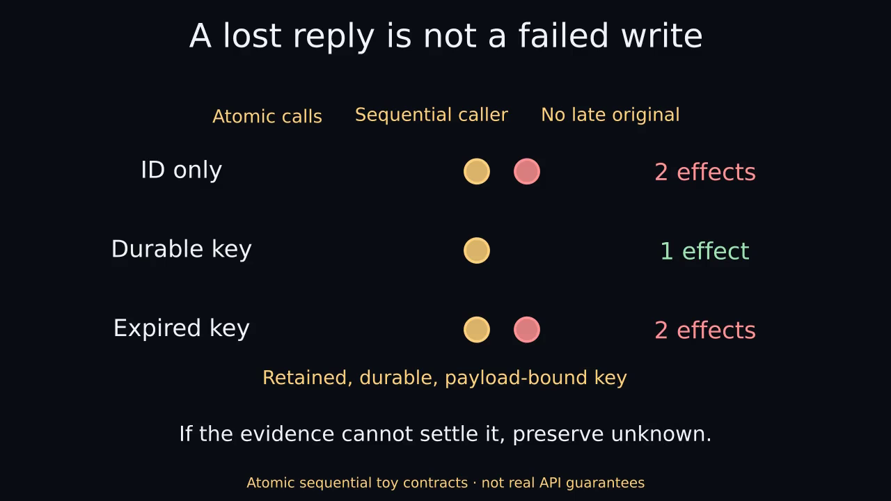

A lost reply is not a failed write
56.1-second narrated Manim illustration. Synthetic stock voice. SYNTHETIC CONTRACTS · NOT REAL API GUARANTEES.
Static by default. Choose playback only if you want motion and sound. Captions use approximate sentence timing.

Download narrated MP4 · Complete text and visual explanation · Captions · Original silent version
Text and visual explanation
A lost reply is not a failed write
Narrated Manim concept video. 56.100 seconds.
Synthetic stock voice: Kokoro am_michael.
Sentence captions are approximate, not word-aligned.
SYNTHETIC CONTRACTS · NOT REAL API GUARANTEES
0.000–11.733 seconds
Spoken: You send a request, then the reply disappears. In this example, the service already committed the write. The caller sees a timeout, but can't see that hidden outcome.
Visual explanation: A caller submits op-1, add A. The toy service commits one effect and loses the reply. The caller observes reply unavailable. Hidden effects are evaluator-only ground truth, not information contained in the timeout.
11.733–24.567 seconds
Spoken: The same timeout could also mean nothing committed. Those two histories look identical to the caller. A missing or stale lookup doesn't necessarily resolve the uncertainty.
Visual explanation: Two hidden histories produce the same caller observation: no initial commit with zero effects, or an initial commit with one effect. The caller sees reply unavailable in both. A missing or stale lookup is not automatically proof of noncommit.
24.567–40.733 seconds
Spoken: Now retry the same request ID. With no deduplication, this toy produces two effects. A retained, durable, payload-bound key prevents the duplicate here. If the key has expired, the duplicate can return.
Visual explanation: One sequential retry after an initial commit yields two effects with ID only and no deduplication; one with a retained durable payload-bound key; and two when a key expires exactly at retry time. If the initial call never committed, a no-dedup retry yields one effect. Effects survive key expiry; cache hits do not renew lifetime. The toy uses atomic calls, a single sequential caller and no late in-flight original. A live recovery decision also needs freshness, payload scope, expiry and whether the original may commit later. A reliable committed result may resolve uncertainty; otherwise preserve unknown. No real request or write occurs in this animation.
40.733–56.100 seconds
Spoken: This is an atomic, sequential toy with no late original request. Real recovery also depends on freshness, expiry, and in-flight work. When the evidence can't settle the outcome, preserve unknown.